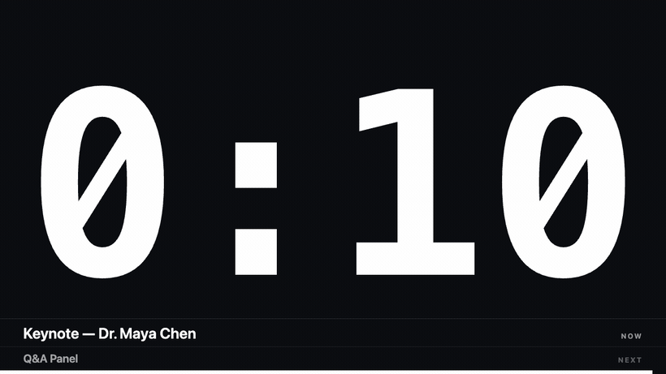
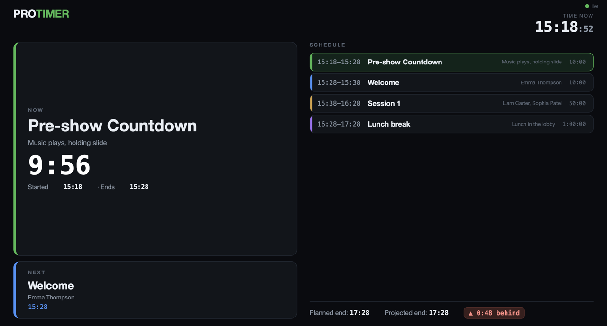
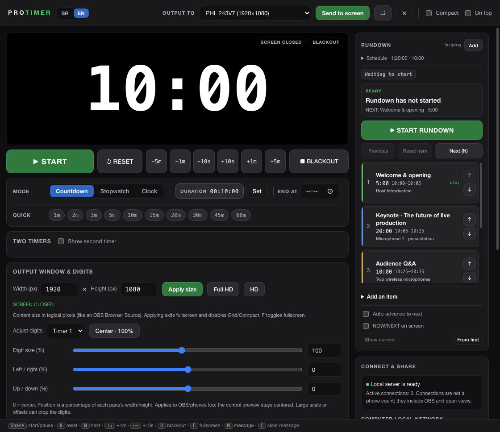

A free stage timer for live production
Big, clear countdown on any screen — stage, projector, OBS or a phone in your hand. Open-source, no sign-up, for macOS and Windows.
Free & open-source (MIT) · no account · English & Serbian
Everything a show actually needs
Built from real live-production work — not a generic countdown app.
Countdown, stopwatch & clock
Plus “count down to an exact time”, color warnings (white → yellow → red) and overtime with a flash at zero.
OBS / NDI overlay
A transparent output you add as an OBS Browser Source — a clean countdown over your video. NDI through OBS.
Phone remote & QR
Run the timer from your phone over Wi-Fi, and share a QR code or link so anyone can watch the timer.
Send to any screen
Push the output fullscreen to a second monitor or projector with one click.
Rundown & backstage view
A run of show with NOW / NEXT, planned clock times and an over/under “are we on time?” indicator.
Free & bilingual
Completely free, open-source, no sign-up. Interface in English and Serbian. Keyboard shortcuts, low latency.

A backstage screen for the whole crew
Put the rundown on any screen or phone: what’s on now, what’s next, the full schedule with clock times, and whether the show will finish ahead of or behind plan. Ideal for a green room, a stage manager or a lobby display.
One clean control window
Transport, timer modes, colors, on-screen text, a cue-by-cue rundown, and the network links for OBS and phones — all in one place. Send messages to the speaker, blackout the screen, adjust time live without anyone noticing.

FAQ
Free stage timer, OBS overlay, phone remote — the common questions.
Is ProTimer free?
Yes — completely free and open-source under the MIT license. No sign-up, no subscription, no time limit.
Does it work with OBS?
Yes. ProTimer serves a web page you add as an OBS Browser Source. Turn on the transparent background and you get a clean countdown overlay over your scene. You can also route it to NDI through OBS.
Which platforms does it run on?
macOS (Apple Silicon) and Windows. Grab the installer from the releases page.
Can I control it from my phone?
Yes. ProTimer gives you a remote URL for any phone or tablet on the same Wi-Fi, plus a QR code so others can pull up the timer on their own screens.
Is it an alternative to StageTimer, Ontime or CueTimer?
It’s a free, open-source stage timer that covers the core countdown, OBS overlay and phone-remote use case — a lightweight, no-account alternative for live events, conferences, churches, theatres and streams.
Download ProTimer — free
No account. No subscription. Open-source.